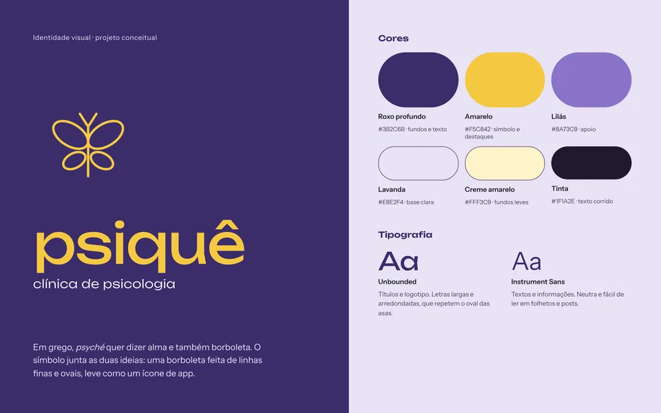
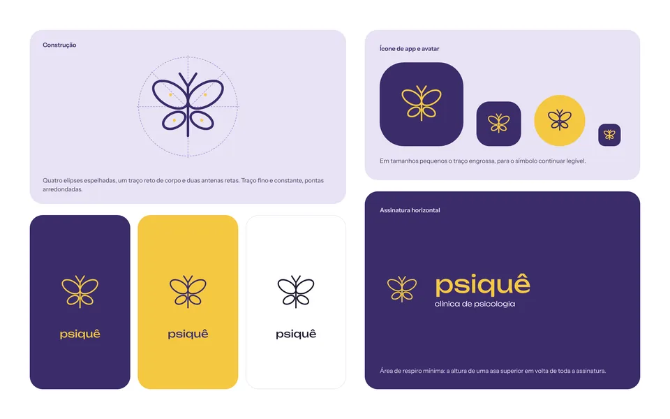
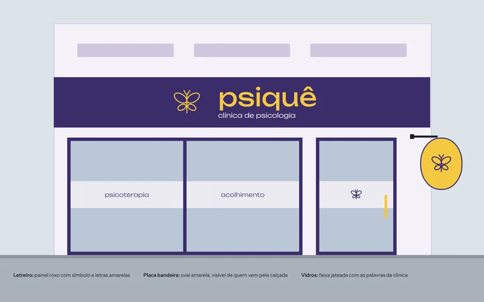
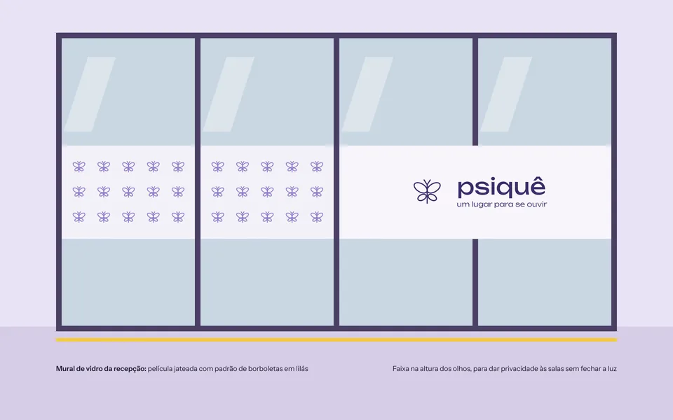
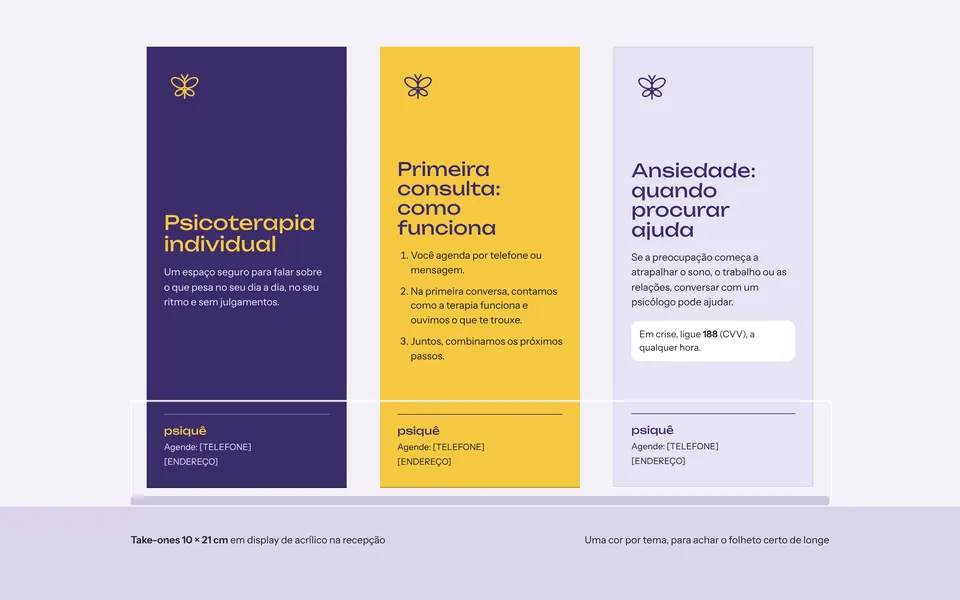
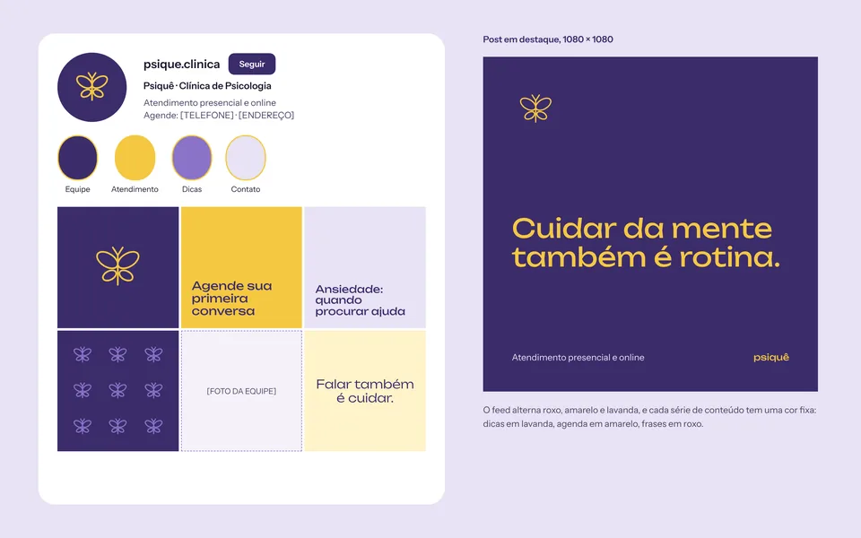
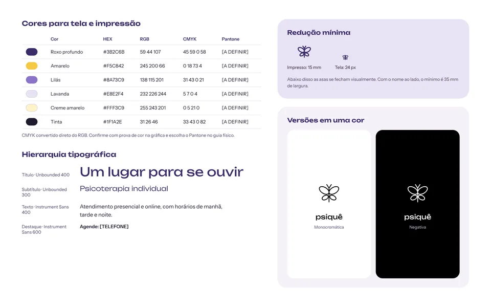
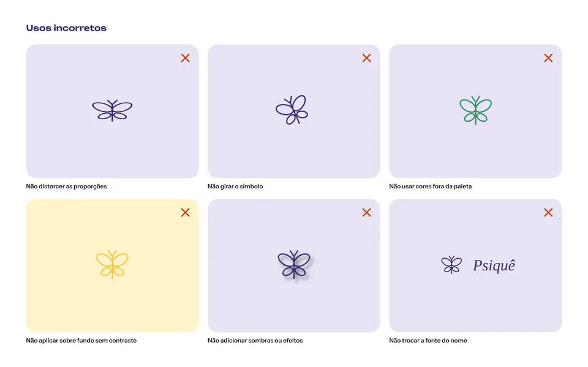

PSIQUÊ
Visual identity for a psychology clinic: logo, applications and brand guidelines.
- Type
- Visual identity
- Role
- Graphic designer
- Deliverables
- Logo, applications and guidelines
- Boards
- 8
Conceptual reinterpretation of a visual identity project I did for a client, a psychology clinic. Name, logo and pieces were recreated for the portfolio and are not the material delivered to the client. The boards are in Portuguese.
BRAND




APPLICATIONS








BRAND GUIDELINES



